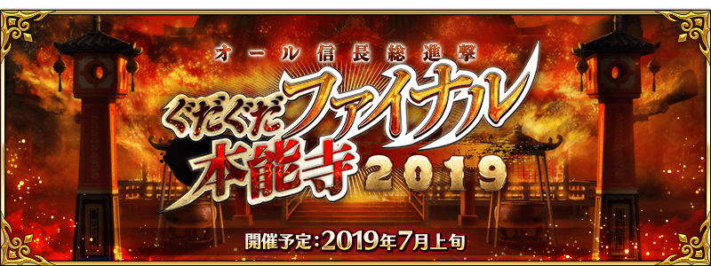
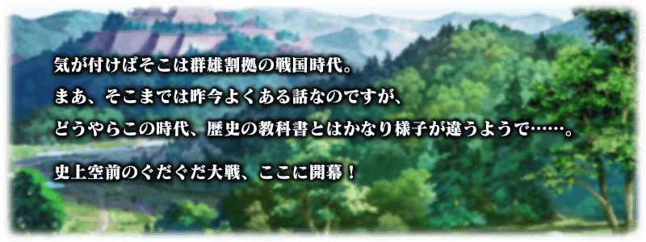
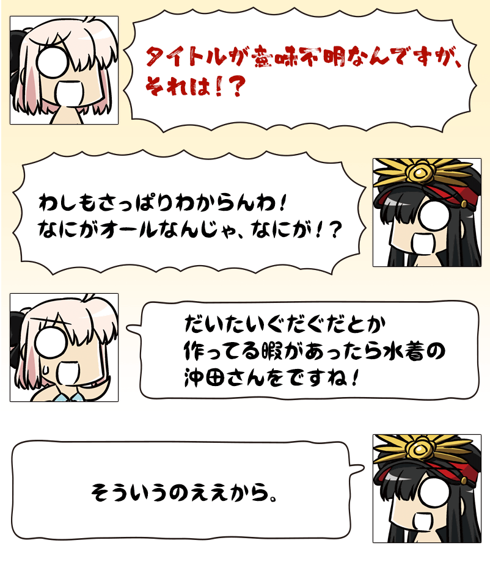
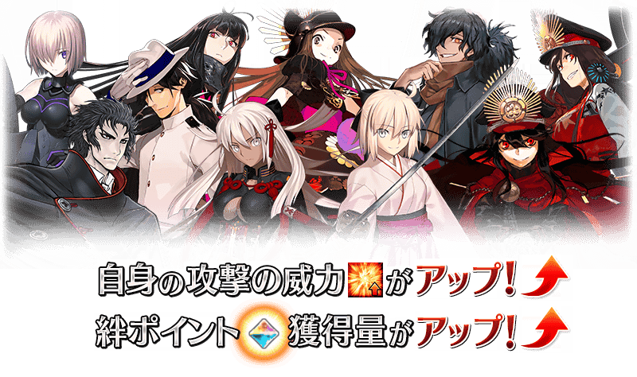

◆活動概要◆
預定舉辦期間限定活動「All信長總進擊 GUDAGUDA Final本能寺本能寺2019」！
本活動的參加條件為通過「特異點F 炎上汙染都市 冬木」。
於主線故事推進最初造訪特異點的攻略，滿足參加條件吧！
◆活動舉辦預定◆
2019年7月上旬
◆活動參加條件◆
滿足以下條件的Master才能參加
・通過「特異點F 炎上汙染都市 冬木」
本活動的期間中、下表的從者在活動關卡中會得到「自身的攻擊威力提升」與「絆點數獲得量提升」的加成！
強化對象從者，挑戰活動吧！
※活動加成的效果量因從者而異。 ※自6月28日(五) 17:00，在從者選擇畫面和從者強化畫面等，追加活動加成篩選器。由於是只顯示於活動活躍從者的便利功能，敬請活用。
得到活動加成的從者
下表的Servant在活動關卡中會得到「自身的攻擊威力提升」與「絆點數獲得量提升」的加成。
※「絆點數獲得量提升」的對象因從者而異。 ※瑪琇・基利艾拉特的「絆點數獲得量提升」效果，是所謂「我方全體含候補的絆點數獲得量提升」的效果。支援時此效果無效。

【活動加成的對象從者】
| 職階 | 稀有度 | 從者名 |
|---|---|---|
| Saber | ★★★★★ | 沖田總司 |
| ★★★★ | 尼祿・克勞狄烏斯 | |
| Archer | ★★★★ | Emiya |
| ★★★★ | Emiya〔Alter〕 | |
| ★★★★ | 織田信長 | |
| Lancer | ★★★★ | 阿爾托莉亞・潘德拉剛〔Alter〕 |
| ★★★ | 庫・夫林 | |
| Rider | ★★★★ | 坂本龍馬 |
| ★★★ | 牛若丸 | |
| ★★★ | 美杜莎 | |
| Caster | ★★★ | 美狄亞 |
| Assassin | ★★★★★ | 李書文 |
| ★★★ | 岡田以藏 | |
| ★★ | 咒腕的哈桑 | |
| Berserker | ★★★★★ | 庫・夫林〔Alter〕 |
| ★★★★★ | 土方歲三 | |
| ★★★★ | 阿塔蘭塔〔Alter〕 | |
| ★★★★ | 織田信長 | |
| ★★★★ | 茶茶 | |
| Alterego | ★★★★★ | 沖田總司〔Alter〕 |
| ★★★★★ | 志度內 | |
| Shielder | ★★★ | 瑪琇・基利艾拉特 |
期間限定活動「All信長總進擊 GUDAGUDA Final本能寺本能寺2019」舉辦將近！
経験値的官方支援漫畫ガ「Fate/GUDAGUDA Order」以期間限定再一次復活了！